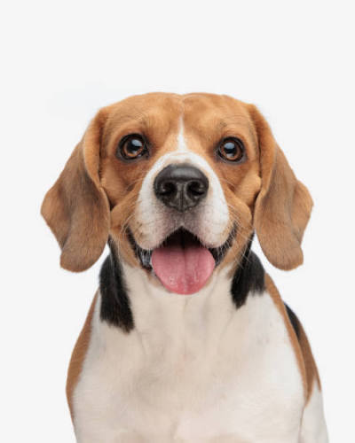

The Beagle is a breed of small scent hound, similar in appearance to the much larger foxhound. The beagle was developed primarily for hunting hare, known as beagleing. Possessing a great sense of smell and superior tracking instincts, the beagle is the primary breed used as detection dog for prohibited agricultural imports and fooodstuffs in quarantine around the world. The beagle is intelligent and is a populaa pet due to its size, good tmper, and a lack of inherited health problems.
Read More